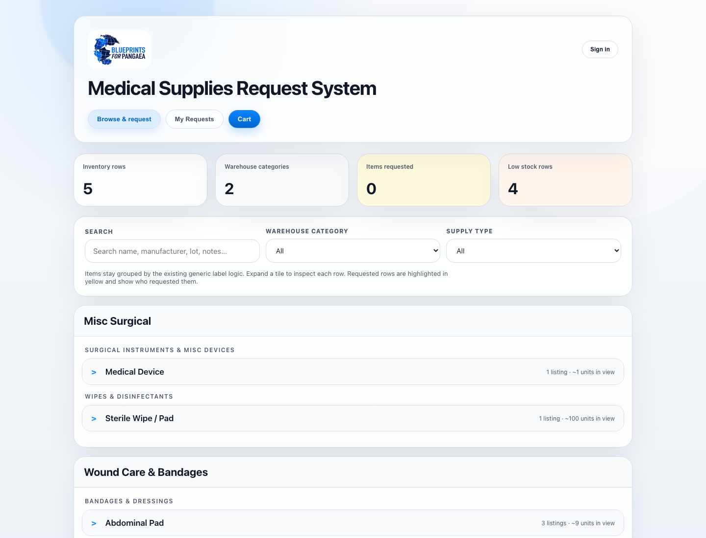

Partner clinics requesting medical supplies from Blueprints HQ were doing it over
email threads and shared sheets — no request status, no shipment visibility, constant
back-and-forth.
What I built
An external supply-request portal (FastAPI backend, React frontend)
where partner organizations submit and track medical-supply requests.
A Gemini-powered shipment-logging API synced with a live Google
spreadsheet database for cross-organization coordination, later backed by a new
PostgreSQL integration.
Automated email notifications (Resend API) so HQ and partners are
alerted the moment a request changes status.
Results
In use by 10+ partner organizations, replacing the email-thread
workflow with a single portal and an auditable request lifecycle.
The portal

The partner-facing request portal (sample data): live inventory grouped by warehouse
category, fuzzy search, low-stock flags, and a cart-based request flow.
Walkthrough
Screen-recording GIF slot: submit a request → HQ approves → email lands → shipment
logged. Record the demo instance (make dev) and drop the GIF/video here.